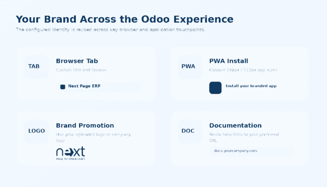
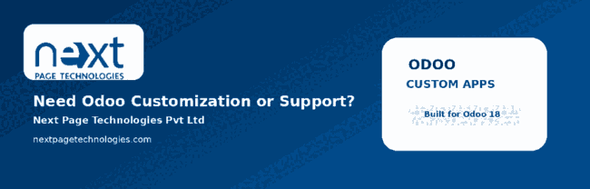

Odoo 18 Branding
Customize the browser-facing identity of Odoo with your own application title, favicon, PWA app icon and brand promotion logo. The addon also supports documentation redirection and selected interface debranding so organizations can present a more consistent internal brand experience.
Branding controls are exposed through Odoo Settings so administrators can manage the application title, favicon, PWA icon, promotion logo and documentation URL without editing core Odoo files.

The configured identity is reused across browser tabs, the PWA web manifest, brand promotion areas and supported documentation links.

This package contains active customizations beyond favicon management. They are disclosed here so customers understand the complete installed scope.
npt_custom_favicon